Reference business process: Creating a driving license
- 1. General description
- 2. Business process modeling
- 2.1. Creating a business process
- 2.2. Reference examples
- 2.3. High-level overview of the process: Creating participants
- 2.4. Start event
- 2.5. Exclusive Gateway: Initial decision point
- 2.6. Enter personal ID user task
- 2.7. Exclusive Gateway and sequence flows
- 2.8. Service task: Check if the DDL request already exists
- 2.9. Exclusive gateway: default flow and validation errors
- 2.10. Service task: Search person by ID in the external system
- 2.11. Service tasks: Request health and driving school certificates
- 2.12. Service Task: Search for entities in data factory
- 2.13. Service task: Read driving categories by constant codes
- 2.14. Script task: Prepare shown data
- 2.15. User task: View received data
- 2.16. Exclusive gateway and subsequent activities
- 2.17. "Is application approved?" exclusive gateway
- 2.18. The "Application is not approved" flow
- 2.19. The "Application is approved" flow
- 2.19.1. Stripe payment user form
- 2.19.2. Get Stripe payment details
- 2.19.3. Script task: Prepare shown data
- 2.19.4. User task: View payment result
- 2.19.5. Script task: Prepare data for system signature
- 2.19.6. System signature, database save, and user notification for accepted digital driving license
- 3. Related pages
1. General description
This business process describes a complex workflow for handling the creation and approval of a driving license application. The process integrates various user tasks, service tasks, gateways, and events, making it a comprehensive representation of the business logic required to manage a driving license application from start to finish. Here’s a general breakdown of the essential components and their functionality within this process.
1.1. Process overview
-
Process Name: Create a driving license
-
Start Event: The process is initiated by a user or system action that triggers the start event.
1.2. Key tasks and decision points
- User Tasks:
-
-
Enter personal ID: Users start by entering a personal identification number, a crucial step as it forms the basis for further checks and data retrieval.
-
View and sign data: Various stages in the process require the user to view details (such as application status or payment forms) and sign to acknowledge or approve the data presented.
-
- Service Tasks:
-
-
Data checks and validations: Several service tasks are used to check existing data against external systems (like health registries or driving school certificate registries) to validate the information provided in the application.
-
Error handling: Custom tasks are set up to handle validation errors, ensuring that any data inconsistencies or errors are caught early and managed appropriately.
-
- Gateways:
-
-
Exclusive gateways: These are used to make decisions based on data conditions, directing the flow of the process based on conditions such as whether an application is approved, whether a driving license already exists, and so on.
-
Parallel Gateways: Handle concurrent processes where multiple checks or tasks must be carried out independently but within the same workflow sequence.
-
- Boundary events:
-
-
Error events: Attaching tasks that might fail due to external system errors ensures the process can handle exceptions gracefully.
-
Timer events: Ensure that specific tasks are completed within a specified timeframe, adding time sensitivity to critical parts of the process.
-
1.3. Process flow
-
The process flow includes conditions where the application can be approved or declined based on various checks (health status, existing driving license checks, and so on).
-
Payments are handled within the process, including viewing payment forms and verifying payment details, which are crucial for the application’s financial aspects.
-
The end events signify the successful completion of the driving license application or cancellation/error outflows depending on the path taken through the process.
1.4. Use and significance
This BPMN process is crucial for automating the driving license application workflow. It ensures that all regulatory and data verification steps are followed without manual intervention. By automating these steps, the system reduces human error, speeds up the application process, and ensures a consistent approach to handling driving license applications.
2. Business process modeling
This section will walk you through creating a business process model using the Administrative Portal’s web interface. Follow these steps to build a BPMN diagram that meets your organization’s requirements.
2.1. Creating a business process
Creating a business process is straightforward. Here’s how to get started:
-
Navigate to the Administrative Portal web interface.
The Administrative Portal will be available if deployed in your demo registry by the following link: Unresolved include directive in modules/registry-develop/pages/best-practices/payments/bp-create-driving-license.adoc - include::platform:ROOT:partial$templates/links/registry/administrative/admin-portal.adoc[] .
-
Access the Process Models section to create a new business process model.
-
A pop-up window will appear. Choose whether to continue with a new candidate version or proceed within the master version of the registry regulations.
You can read more on this topic at Managing registry regulations versions. -
On the General tab, enter the business and a system name for your process.
-
Click the Builder tab to begin modeling your BPMN diagram.
2.2. Reference examples
Locating a reference business process exampleThe demo registry’s regulations contain examples of reference business processes. To find one, go to the global-demo-registry-regulation Gerrit repository and search for reference-driving-license-create keywords. So, you will see an example of a BPMN process diagram. To find the names of the forms used in the business process, check the Form key field within the corresponding User Tasks in the process model. You can quickly locate the deployed reference business process by searching for its business or system name on the Admin, Citizen, and Officer portal web interfaces. |
2.3. High-level overview of the process: Creating participants
In BPMN, a participant is often represented as a "pool" within the diagram. This concept is essential for organizing and categorizing different entities that interact within the business process.
A participant, whether it’s a person, system, or organization, plays a crucial role in the process. In the diagram, each participant is represented by a pool, a graphical container that separates their activities from others.
First, you must create a Pool/participant component to build your BPMN diagram. Here’s how to start:
-
Use the tool’s palette to drag a pool shape onto your drawing area.
-
Label the pool with the participant’s name to reflect the entity or role it represents within the process.
This step sets the foundation for adding specific activities, events, and gateways that define what actions the participant will perform or interact with during the business process.
2.4. Start event
The Start Event initializes the process. A user action or system call typically triggers it.
This event is designed to pass the initiator variable, initiating the process with the initiator’s JWT token. This token is crucial for identifying the user throughout the process and securing the transactions within this business process.
2.5. Exclusive Gateway: Initial decision point
An Exclusive Gateway is used early in the process to determine the initial path based on specific conditions related to the user’s input or external validations.
This gateway assesses conditions such as whether the personal ID entered by the user matches records in external systems. Based on the outcome, the process may branch into different paths, such as further data validation or immediate rejection due to errors.
Link intermediate catch events are used to handle specific situations that can occur after decisions are made at the exclusive gateway. These events are designed to intercept the process flow based on the reception of messages or the occurrence of specified conditions that might not be directly handled within the regular flow of the process. For example:
-
Validation error handling: If data validation fails after the exclusive gateway directs the flow toward data verification, an intermediate link catch event can be configured with utmost reliability to capture this validation error. This ensures that any exceptions or errors in data validation are caught and handled appropriately, redirecting the process to error-handling routines or compensating activities.
-
Time-based events: In scenarios where the decision leads to a path that involves time-sensitive operations, link intermediate catch events can monitor for timeout conditions. If a response from an external system isn’t received within a predefined time limit, the event triggers, allowing the process to handle timeouts by either retrying the operation or escalating the issue.
-
Message events: When the gateway’s decision relies on information from external parties, such as third-party services or other process instances, link intermediate catch events can wait for specific messages. Upon receiving the right message, the process can continue along the path corresponding to the received data.
| You can find more details on "Link" events at Link event. |
2.6. Enter personal ID user task
This user task involves the user entering their personal identification number. It’s a critical step as it triggers later checks and validations.
-
In the Form key field, specify the system identifier for the user interface form that will be utilized for this task. This identifier links the task to its corresponding form, enabling the appropriate user interactions for the process.
-
In the Assignee field, input
${initiator}to assign this task to the process initiator, ensuring it is directed to the individual or system that started the process, maintaining a consistent and traceable flow of actions.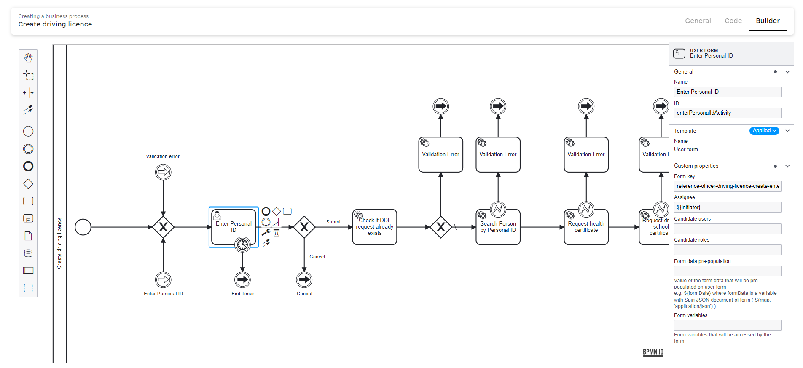 -
A timer boundary event is attached to this task. If the user does not complete the task within the specified duration, a timer event is triggered, which can redirect the process flow, typically to handle session timeouts or prompt the user again.
See more details on timers at:
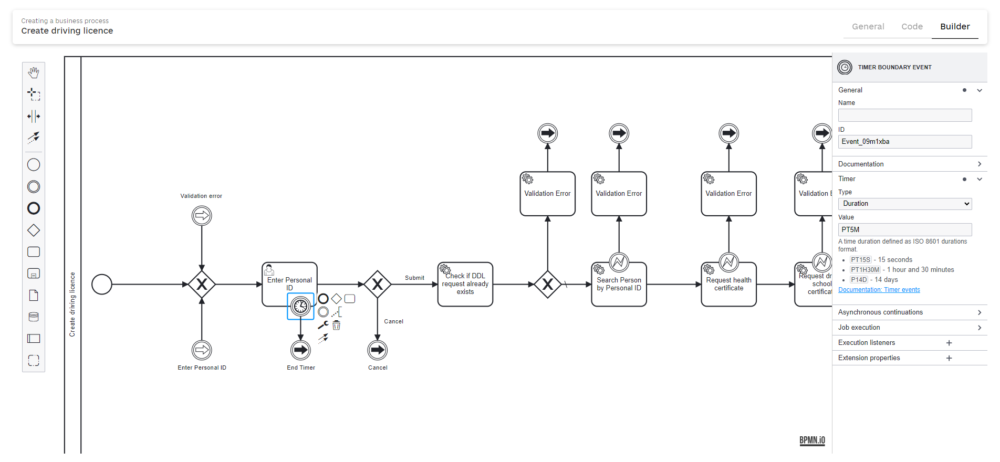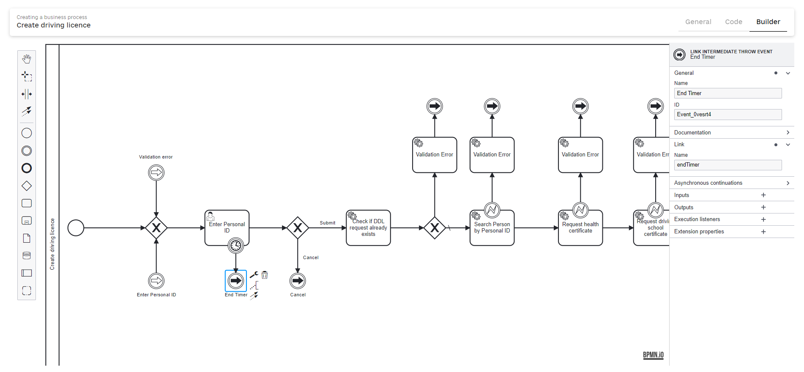
2.7. Exclusive Gateway and sequence flows
An exclusive gateway in BPMN serves as a decision point that dynamically determines the direction of the process flow based on specific conditions evaluated at runtime. This enables the business process to adapt its flow according to real-time data and user interactions. The conditions are evaluated using expressions written in JUEL, which allows access to the data submitted by the users through forms.
|
You can model the action codes within your BPMN diagrams by leveraging the Logic tab in the EditGrid form component. This feature allows you to dynamically define and manage action codes, enhancing your forms' interactivity and functionality.
For a detailed guide on configuring and utilizing action codes effectively in your forms, refer to the comprehensive documentation available at: Selecting and acting on one or multiple rows in a table. |
2.7.1. "Cancel" condition expression
${submission('enterPersonalIdActivity').formData.hasProp('_action_code') && submission('enterPersonalIdActivity').formData.prop('_action_code').value().equals('_action_cancel')}This expression uses the submission() function to access form data from the "Enter Personal ID" user task. It then employs two methods:
-
hasProp('_action_code'): Checks if the_action_codeproperty exists in the form data. This method returnstrueif the property is present, indicating that the user may have made a selection that corresponds to this field. -
prop('_action_code').value().equals('_action_cancel'): Retrieves the value of_action_codeand checks if it is equal to_action_cancel. This indicates that the user wishes to cancel their input.
If both conditions are met, the process flow will follow the "Cancel" path, handling the cancellation as per the predefined business rules.
2.7.2. "Submit" condition expression
${!submission('enterPersonalIdActivity').formData.hasProp('_action_code')}This expression also uses the submission() function to access the form data:
-
!hasProp('_action_code'): This checks for the non-existence of the_action_codeproperty in the form data. The!operator negates the result ofhasProp('_action_code'). Thus, this expression returnstrueif_action_codeis absent.
The absence of this property suggests that the user has not activated the cancel action, and hence, the process should proceed along the "Submit" path. This path typically involves further validation of the ID entered, processing necessary data, or proceeding to additional tasks needed to complete the application.
Each path emanating from the exclusive gateway is conditioned on the presence or absence of specific elements within the form data, showcasing BPMN’s capability to model complex decision-making scenarios based on dynamic user inputs.
2.8. Service task: Check if the DDL request already exists
The "Check if DDL request already exists" service task interacts with a data factory to query and retrieve information about potential duplicates of a driving license application. It uses a delegate expression to execute business logic through a predefined service, ensuring the process adheres to data integrity and avoids redundant entries.
2.8.1. Configuration details
Create a Service Task activity and select a "Search for entities in data factory" extension template.
This configuration signifies that the task uses a specific delegate (predefined logic) to handle the search operation.
| See additional details on the delegate configuration at Search for entities in data factory. |
2.8.2. Input/Output parameters
-
Resource:
driving-licence-duplicates-check.This input specifies the resource or the type of data check to be performed by the data factory service.
-
Search conditions:
A map of conditions is used to specify the criteria for the search. In this case:
personCode: ${submission('enterPersonalIdActivity').formData.prop('personalId').value()}This line extracts the
personalIdfrom the form data submitted in the "Enter Personal ID" task, using it as a key to search for duplicate records. -
X-Access-Token:
${completer('enterPersonalIdActivity').accessToken}The service task uses an access token to authenticate the request to the data service securely. Here, you may see a token of the latest user task completer.
-
Output parameter:
The response from the data factory service is captured in the
drivingLicenceRequestResponsevariable, which contains details about any existing driving license applications matching the search criteria.
2.9. Exclusive gateway: default flow and validation errors
In business process modeling, an exclusive gateway is crucial for decision-making. It dictates the flow based on conditions derived from the process data. It directs the process dynamically by evaluating conditions and ensuring that it follows a path corresponding to the current state of data or events.
2.9.1. Adding an exclusive gateway
First, integrate an exclusive gateway into your diagram to manage decision points related to validation errors or standard operational flows. This gateway will evaluate specific conditions and direct the flow accordingly.
2.9.2. Configuring the validation error flow
To manage potential validation errors, model a "Throw Validation Error" service task right after the exclusive gateway. Pass validation errors as the list of values:
{"field": "", "value": "", "message": "The DDL already exists in the system for the entered Personal ID. Please, check the Personal ID and try again"}
This expression checks whether the responseBody from the drivingLicenceRequestResponse contains any elements. If it does, this indicates that data items might be associated with a validation error; thus, the flow should proceed to handle these errors.
| All subsequent error validation flows will be configured similarly. |
2.9.3. Setting the default logic
In addition to the conditional flows, it is essential to define a default flow. This default path is followed when no specified conditions are met, ensuring the process continues smoothly without errors or other specific conditions.
-
Default Logic Arrow: Add an arrow from the exclusive gateway, marking it as the "Default" flow. This arrow should be directed towards the next task or event representing the standard operational path, which the process should follow when validations pass without errors.
Use this approach to clarify the process flow and ensure that all possible conditions are accounted for, enhancing the process model’s reliability and clarity.
2.10. Service task: Search person by ID in the external system
This service task, named "Search Person by Personal ID," is designed to query a population registry system to retrieve details of a person based on their personal identification number (ID). Here’s a breakdown of what this service task does:
-
Connect to external system: The task utilizes a delegate expression,
${externalSystemConnectorDelegate}, which specifies a predefined script or class that handles the task’s functionality. This delegate is configured to interact with external systems, facilitating data retrieval.Find more details on the delegate at Connect to external system v2. 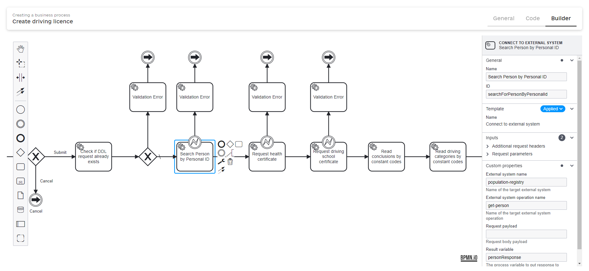 -
Request parameters:
-
A key-value map contains the necessary parameters for the operation. Here, the key is
id, and its value is dynamically obtained from the process’s form data using${submission('enterPersonalIdActivity').formData.prop('personalId').value()}. This expression extracts the personal ID entered by a user in a previous activity, ensuring that the correct ID is used to search for the person.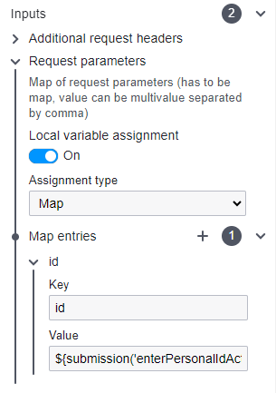
-
-
System and operation specifications:
-
External system name: The parameter is set to "population-registry". This indicates that the service task communicates with a population registry system, which is likely a database or a service that stores and manages personal identification information.
-
External system operation name: The parameter is
get-person, specifying the exact operation that the external system connector should perform. In this case, it retrieves a person’s details.
-
-
Output parameters:
-
Person Response: The
personResponseoutput parameter is designated to store the response from the external system. This response typically includes the person’s data retrieved by the operation, such as name, date of birth, address, and potentially other personal details. The data stored inpersonResponsecan then be used in later tasks within the process for further actions or decisions.
-
In summary, this service task acts as an interface between the BPMN process and an external population registry system, efficiently fetching personal information based on a provided ID. This functionality is critical in processes that require identity verification or need to enrich process data with personal information from external sources.
Error boundary event
Attach an error boundary event to the "Search Person by Personal ID" service task to handle potential errors during interaction with the external population registry system. This setup is essential for robust error handling within the business process, ensuring that exceptions are managed effectively and do not cause unexpected terminations or behavior.
- Configuration details for the error boundary event
-
-
Name:
HttpClientErrorException.This name identifies the type of exception that the boundary event is designed to catch. It explicitly handles exceptions related to HTTP client errors, which might occur when the service task makes web requests to external services.
-
Global Error Reference: This field is automatically populated based on the Name parameter. It links the boundary event to a globally defined error, allowing the process to recognize and respond to this specific exception consistently throughout.
-
Code:
org.springframework.web.client.HttpClientErrorException.This parameter specifies the Java exception class that corresponds to the error. It’s an exception thrown when an HTTP
4xxis received, typically indicating client errors such as bad requests, unauthorized access, or forbidden requests. This helps precisely focus on errors related to issues on the client side of the HTTP request.
-
- Implementing the validation error handling
-
Following the configuration of the error boundary event, add a subsequent service task or error handling mechanism similar to the previous steps. This should be aimed at managing the validation errors:
-
Implement a service task to log the error, notify system administrators, or trigger corrective workflows. This ensures that any issues detected are addressed promptly and do not impact the overall process flow.
-
Optionally, model a user task to inform involved parties about the error and gather additional input or corrections if the process requires it.
-
Attaching an error boundary event to the service task safeguards the process against disruptions caused by HttpClientErrorException. Errors are handled gracefully, and appropriate actions are taken to maintain the integrity and continuity of the business process.
2.11. Service tasks: Request health and driving school certificates
You will now model service tasks to retrieve certificates from external systems. Additionally, you should establish predefined service tasks for handling validation errors, following the approach outlined in previous sections of this guide.
2.12. Service Task: Search for entities in data factory
This service task is designed to query a data factory for specific entities based on predefined criteria. It employs a Groovy script to construct a search query dynamically and fetches data relevant to the process at hand.
2.12.1. Purpose and usage
The primary purpose of this service task is to enhance the process’s data context by retrieving additional detailed information required for subsequent decisions or actions, such as verifying health certificate conclusions. Using a dynamic script to generate search parameters based on earlier process steps exemplifies a flexible, responsive approach to process automation, ensuring that the data retrieved is immediately relevant to the case being handled.
2.12.2. Inputs and configuration
Groovy script: The task uses a Groovy script to generate the search criteria dynamically.
def map = [:]
def conclusionCodes = []
healthCertificateResponse.responseBody.prop('conclusion').elements().each {
conclusionCodes.add(it.prop('constantCode').value())
}
map.put('constantCode', conclusionCodes)
return mapThis script is crucial for extracting relevant data points from a previous response and formatting them into a structured query map. Here’s a breakdown of the script’s functionality:
-
Initializes an empty map and a list to hold conclusion codes.
-
Iterates over elements in
healthCertificateResponse.responseBodyunder theconclusionproperty. It retrieves theconstantCodevalue for each element and adds it to theconclusionCodeslist. -
Places the list of conclusion codes into the map under the key
constantCode. -
Returns the map, which serves as the search condition for the data factory query.
-
Resource:
conclusion-by-constant-code -
This specifies the particular resource or dataset the service task queries in the data factory. It targets a collection or endpoint to handle queries for conclusion constants associated with health certificates.
-
X-Access-Token:
${completer('enterPersonalIdActivity').accessToken} -
This dynamic expression fetches an access token from the completer of the 'Enter Personal ID' activity. The token is likely necessary for authentication and authorization to securely access the specified data resource.
2.12.3. Outputs
Result variable: conclusionsResponse
This variable stores the response from the data factory after executing the query. It contains the data retrieved based on the supplied conclusion codes, which may include detailed conclusions associated with the health certificate data initially provided.
2.13. Service task: Read driving categories by constant codes
You will now model a service tasks to retrieve driving categories by constant codes from the database following the approach outlined in a previous section of this guide.
2.14. Script task: Prepare shown data
2.14.1. Task overview
Create a script task to consolidate and prepare the data required for display or further processing in later steps of the business process. This script task utilizes Groovy to dynamically gather and structure data from multiple sources, ensuring all relevant information is readily available and formatted appropriately for use in user interfaces or decision-making processes.

2.14.2. Script breakdown and functionality
Script
import java.time.LocalDate
println conclusionsResponse.responseBody
println drivingCategoriesResponse.responseBody
payload = S([:], 'application/json')
def personResponseBody = personResponse.responseBody
def healthCertResponseBody = healthCertificateResponse.responseBody
def drivingCertResponseBody = drivingCertResponse.responseBody
payload.prop('personalId', personResponseBody.prop('id'))
payload.prop('firstName', personResponseBody.prop('firstName'))
payload.prop('lastName', personResponseBody.prop('lastName'))
payload.prop('dateOfBirth', personResponseBody.prop('dob'))
payload.prop('countryOfBirth', personResponseBody.prop('countryOfBirth'))
payload.prop('healthCertificateStatus', healthCertResponseBody.prop('certificateStatus'))
def conclusions = []
conclusionsResponse.responseBody.elements().each {
conclusions.add(it)
}
payload.prop('healthCertificateConclusion', conclusions)
def drivingCategories = []
drivingCategoriesResponse.responseBody.elements().each {
drivingCategories.add(it)
}
payload.prop('healthCertificateDrivingCategory', drivingCategories)
payload.prop('healthCertificateIssueDate', healthCertResponseBody.prop('issueDate'))
payload.prop('healthCertificateExpirationDate', healthCertResponseBody.prop('expirationDate'))
payload.prop('drivingLicenceCertificateIssueDate', drivingCertResponseBody.prop('issueDate'))
payload.prop('drivingLicenceSchoolCertificateStatus', drivingCertResponseBody.prop('drivingSchoolCertificateStatus'))
payload.prop('drivingLicenceCertificateExpirationDate', drivingCertResponseBody.prop('expirationDate'))
set_transient_variable('formPrePopulation', payload)This Groovy script performs several key operations:
-
Imports and initial logging:
-
The script begins by importing
java.time.LocalDate, although this import is not directly used in the provided script snippet. -
It logs the contents of
conclusionsResponse.responseBodyanddrivingCategoriesResponse.responseBodyto the console. This is typically used for debugging purposes to verify that the data is being retrieved correctly.
-
-
Payload initialization:
-
Initializes
payloadas a new JSON object. This will be populated with various pieces of data extracted from the response bodies of different service tasks executed earlier in the process.
-
-
Data extraction and assignment:
-
Extracts and assigns personal information such as personal ID, first name, last name, date of birth, and country of birth from
personResponse.responseBody. -
Retrieves health and driving certificate-related data, including status, issue dates, and expiration dates.
-
Iterates through the
conclusionsResponse.responseBodyanddrivingCategoriesResponse.responseBodyto build lists of conclusions and driving categories, respectively, and adds these lists to the payload.
-
-
Setting transient variable:
-
The script sets a transient variable
formPrePopulationwith thepayload. This variable is intended to prepopulate form fields in later user tasks within the process, providing a seamless and error-free data flow.
-
2.15. User task: View received data
Create a simple user task, apply the User Form extension template and assign this task the business process initiator: ${initator}.
2.16. Exclusive gateway and subsequent activities
In this section, we outline the configuration of an exclusive gateway that directs the workflow based on user inputs from form submissions and the setup of link events for dynamic process navigation, maintaining consistency with earlier configurations.
2.16.1. Adding an exclusive gateway
Insert an exclusive gateway to assess user input. This gateway determines the process’s path—either backtracking to revise entries or proceeding to cancellation, depending on user choices.
2.16.2. Defining sequence flows
-
Sequence Flow "Back":
If the user opts to revise their input, this flow redirects the workflow to a previous step. The evaluation condition is:
${submission('viewDataActivity').formData.hasProp('_action_code') && submission('viewDataActivity').formData.prop('_action_code').value().equals('_action_back')}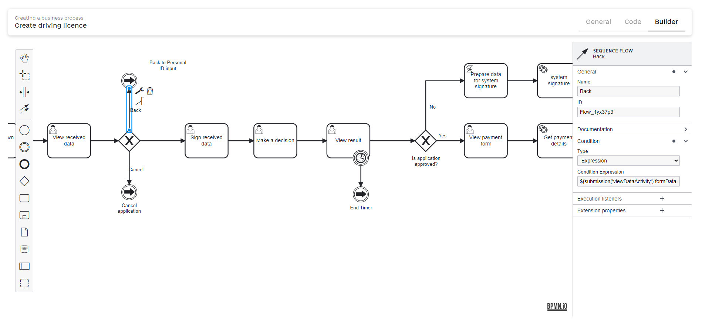 -
Sequence flow "Cancel":
This flow terminates the process or leads to a cancellation workflow if the user decides to cancel the operation. The condition is defined by:
${submission('viewDataActivity').formData.hasProp('_action_code') && submission('viewDataActivity').formData.prop('_action_code').value().equals('_action_cancel')}
2.16.3. User task for data signing by citizens
-
Add a user task where citizens, as service recipients, can sign the data using the Citizen Sign Task extension template, ensuring user validation of all data entries.
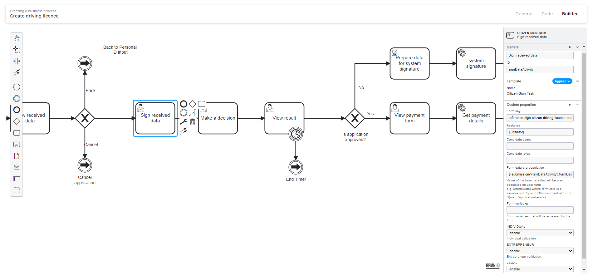
2.16.4. Decision-making user task
Create a user task for decision-making, assigned to roles labeled officer, utilizing pre-populated data from earlier inputs:
-
Candidate roles:
officer. Thus, only users with the system roleofficercan complete this task. -
Form data pre-population:
${submission('signDataActivity').formData}.
2.16.5. User task for data signing by officers
Develop a user task for the officer to review and sign the result data. Implement this with the Officer Sign Task extension template for thorough verification by the responsible authority.
Assignee: ${completer('viewDataForApproveActivity').userName}.
2.16.6. Timer boundary event on an Officer Sign Task
Attach a timer boundary event to the officer sign task to trigger an endTimer link intermediate throw event if not completed within a set timeframe, helping maintain process momentum.
2.17. "Is application approved?" exclusive gateway
Model this exclusive gateway to determine the course of the business process based on an application’s approval status. The gateway directs the process flow along two paths: one for approved applications and another for those not approved, enabling tailored handling of each scenario.
-
Not approved path:
This path is taken if the application has been declined. The following condition checks if the application status in the form data explicitly states "declined." If true, the process follows what might be considered an unhappy path where the application does not proceed to license issuance.
${(submission('viewResultActivity').formData.hasProp('isApplicationApproved') && submission('viewResultActivity').formData.prop('isApplicationApproved').value().equals("declined"))}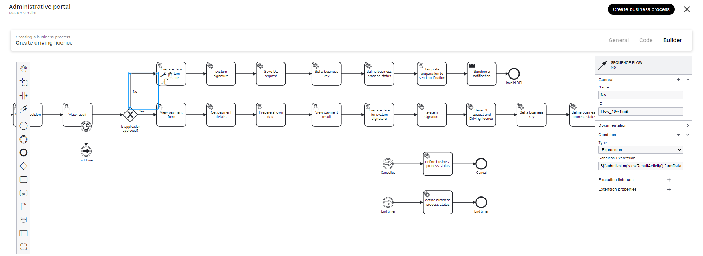 -
Approved path:
If the application is approved, this path is followed, leading to the happy path that progresses toward issuing a driver’s license. The condition expression checks if the 'View Result Activity' form data indicates that the application has been approved.
${(submission('viewResultActivity').formData.hasProp('isApplicationApproved') && submission('viewResultActivity').formData.prop('isApplicationApproved').value().equals("approved"))}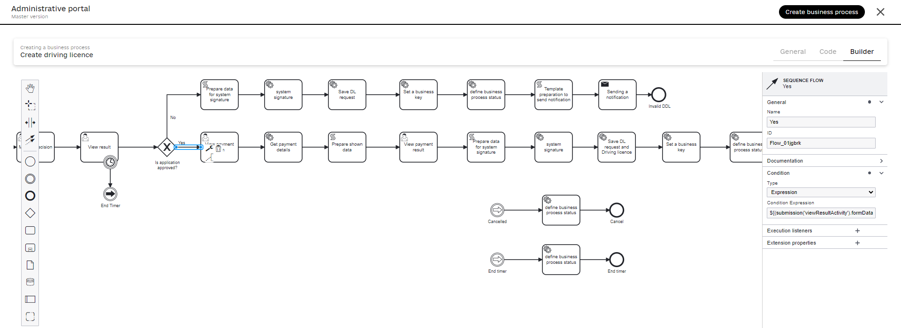
2.18. The "Application is not approved" flow
2.18.1. Script task: Prepare data for driving license request
Create a script task with the code to process data for further sign with the system signature saving to the operational database.
Script
formData = submission('viewResultActivity').formData
def healthCertificate = S([:], 'application/json')
def drivingSchoolCertificate = S([:], 'application/json')
def drivingLicenceRequest = S([:], 'application/json')
if(formData.hasProp('healthCertificateStatus') && formData.prop('healthCertificateStatus').hasProp('constantCode')) {
healthCertificate.prop('status', formData.prop('healthCertificateStatus').prop('constantCode'))
}
if(formData.hasProp('healthCertificateIssueDate')) {
healthCertificate.prop('issueDate', formData.prop('healthCertificateIssueDate'))
}
if(formData.hasProp('healthCertificateExpirationDate')) {
healthCertificate.prop('expirationDate', formData.prop('healthCertificateExpirationDate'))
}
healthCertificateConclusions = S([],'application/json')
if(formData.hasProp('healthCertificateConclusion') && formData.prop('healthCertificateConclusion').isArray()) {
formData.prop('healthCertificateConclusion').elements().each {
healthCertificateConclusions.append(it.prop('conclusionId'))
}
}
healthCertificateDrivingCategories = S([],'application/json')
if(formData.hasProp('healthCertificateDrivingCategory') && formData.prop('healthCertificateDrivingCategory').isArray()) {
formData.prop('healthCertificateDrivingCategory').elements().each {
healthCertificateDrivingCategories.append(it.prop('drivingCategoryId'))
}
}
healthCertificate.prop('conclusions', healthCertificateConclusions)
healthCertificate.prop('drivingCategories', healthCertificateDrivingCategories)
if(formData.hasProp('drivingLicenceSchoolCertificateStatus') && formData.prop('drivingLicenceSchoolCertificateStatus').hasProp('constantCode')) {
drivingSchoolCertificate.prop('status', formData.prop('drivingLicenceSchoolCertificateStatus').prop('constantCode'))
}
if(formData.hasProp('drivingLicenceCertificateIssueDate')) {
drivingSchoolCertificate.prop('issueDate', formData.prop('drivingLicenceCertificateIssueDate'))
}
if(formData.hasProp('drivingLicenceCertificateExpirationDate')) {
drivingSchoolCertificate.prop('expirationDate', formData.prop('drivingLicenceCertificateExpirationDate'))
}
drivingLicenceRequest.prop('drivingLicenceCertificateSource', 'OFFICER')
drivingLicenceRequest.prop('personCode', formData.prop('personalId'))
drivingLicenceRequest.prop('healthCertificate', healthCertificate)
drivingLicenceRequest.prop('drivingSchoolCertificate', drivingSchoolCertificate)
println "drivingLicenceRequest: " + drivingLicenceRequest
set_transient_variable('licencePayload', drivingLicenceRequest)
The script is designed to compile and structure data for a driving license request based on user-submitted form data from a prior activity in the business process. This task ensures that all necessary information is organized and accessible for subsequent operations or integrations. Below is a breakdown of the script’s functionalities:
-
Data retrieval
-
The script initiates by extracting form data from the
viewResultActivity, which involves reviewing application results or related tasks.
-
-
JSON object initialization
-
Three JSON objects are initialized to structure the data:
-
healthCertificate -
drivingSchoolCertificate -
drivingLicenceRequest
-
-
-
Populate health certificate data.
-
The script processes the health certificate details:
-
It checks for and assigns the status, issue date, and expiration date from the form data.
-
It iterates through any conclusion and driving category arrays present, appending the respective IDs to the JSON object.
-
-
-
Populate driving school certificate data.
-
Similar operations are performed for the driving school certificate:
-
Status, issue date, and expiration date are extracted from the form data and assigned to the respective JSON object.
-
-
-
Construct the driving license request.
-
The script sets up the driving license request:
-
A static value
OFFICERindicates the request’s source. -
A
personCodeis extracted from the form data for individual identification. -
The populated
healthCertificateanddrivingSchoolCertificateare included in the request.
-
-
-
Debugging and storing data.
-
The complete
drivingLicenceRequestJSON object is printed to the console for verification. -
The object is stored in a transient variable named
licencePayloadand is ready for use in later process steps or external system integration.
-
2.18.2. System signature, database save, and user notification for declined digital driving license
-
Use the System signature by DSO service extention template to sign data.
For more detail on this delegate configuration see bp-modeling/bp/element-templates/service-task-templates/system-signature-by-dso-service.adoc. -
Use the Create nested entities in data factory extension template to save a nested object to the database.
For more detail on this delegate configuration see Create nested entities in data factory. -
Set a business key. Use the Define process business key extension template.
For more detail on this delegate configuration see Configuring business keys in business processes. -
Define a business process status. Use the Define business process status extension template.
For more detail on this delegate configuration see Define business process status. -
Script task: initialize and store a notification template model.
This script is designed to manage a JSON-based template model within a process execution context. It ensures the template is freshly set up for temporary use without carrying over any previous session data. Below is the explanation of each operation performed by the script:
-
Initialize a JSON object.
-
def templateModel = S([:], 'application/json') -
Initializes an empty JSON object and assigns it to the
templateModelvariable. This function creates a new JSON structure designated specifically for JSON data manipulation.
-
-
Remove existing variable.
-
execution.removeVariable('templateModel') -
Remove any pre-existing
templateModelvariable from the current execution context. This step is crucial to prevent old or unwanted data from affecting the current process logic.
-
-
Set transient variable.
-
set_transient_variable('templateModel', S(templateModel, 'application/json')) -
Sets a transient variable named
templateModelwith the newly initialized JSON object. The JSON object is re-validated through theS()function to confirm its format as JSON. Transient variables are used for data that does not require persistence beyond the immediate process context, ensuring it is available temporarily as needed.
-
By ensuring that the
templateModelis always current and correct, this script significantly enhances the reliability of subsequent process tasks or decision logic. -
-
Notify the user of a result. Use the Send user notification extension template to send the appropriate message to the inbox.
For more details, see the Configuring in-app notifications page.
2.19. The "Application is approved" flow
2.19.1. Stripe payment user form
Configure the View Payment Form task to facilitate online payment processing using Stripe. This task uses the Stripe Payment User Form extension template, designed for seamless integration with the Stripe payment system.
- Configuration parameters:
-
-
Name:
View payment form— Identifies the form used within the process. -
Extension Template: Use the Stripe Payment User form to embed Stripe’s payment functionalities directly into the form.
-
Assignee:
${initiator}— Automatically assigns the form to the user initiating the process. -
Stripe Publishable Key: Enter the publishable key obtained from your Stripe account settings. This key is essential for securely connecting to Stripe’s API. For example:
pk_test_51OmaiLHIom7OONVRmnApw2fhsqmcCu3zJwOcwYVInsLwYLWvPWxlVciRb1BOY22vlK8V1UEL6pVp840Q0K2ktrLL00XYTwbwHw
-
Currency: Set the currency for the payments to be processed. Acceptable values are
UAH,EUR, orUSD, depending on your business region and Stripe account configuration. -
Charge amount: Specify the amount to be charged to the customer’s credit card. The value should be input without any thousand separators, and it accepts a dot (
.) or comma (,) as the decimal separator. Ensure that the amount is neither zero nor negative. For instance,42.59.
-
| For comprehensive guidance on configuring Stripe payments, refer to the documentation on the registry administration portal at Setting up integration with the Stripe payment system. |
2.19.2. Get Stripe payment details
This service task, designed for your convenience, effortlessly retrieves detailed information about a payment made through Stripe. It uses the Get Stripe Payment Details extension template to seamlessly interact with Stripe’s API and fetch the payment status and details.
- Configuration parameters:
-
-
Name:
Get payment details— Specifies the name of the service task within the business process. -
Extension template: Use the Get Stripe payment details template, which is pre-configured to interface directly with Stripe and pull detailed payment information.
-
Payment task identifier: Provide the ID of a previous payment-related user task within the current business process. This ID links the detail retrieval task to the payment transaction.
-
Result variable:
response— This variable will store Stripe’s output, typically including transaction details such as payment status, amount, currency, and any errors or messages returned by the payment gateway.
-
The integration with Stripe via this task allows you to access comprehensive payment information, which can be critical for transaction verifications, customer service, and auditing purposes.
2.19.3. Script task: Prepare shown data
Create a script task to prepare the payment data to present on the following user task.
This sample script processes a response by converting and formatting the amount, extracting relevant data fields, and then storing the formatted data as a JSON string in a transient variable.
import java.math.BigDecimal
import java.math.RoundingMode
// Step 1: Convert the response.amount to BigDecimal and divide by 100, rounding to 2 decimal places.
def amount = new BigDecimal(response.amount).divide(BigDecimal.valueOf(100), 2, RoundingMode.UNNECESSARY);
// Step 2: Extract the currency from the response.
def currency = response.currency;
// Step 3: Create a formatted string representing the charged amount with currency.
def chargedAmount = "$amount $currency".toString();
// Step 4: Extract the status from the response.
def status = response.status;
// Step 5: Extract the created timestamp from the response.
def created = response.created;
// Step 6: Create a map (dictionary) containing the charged amount, status, and created timestamp.
def data = ['amount': chargedAmount, 'status': status, 'created': created];
// Step 7: Convert the map to a JSON string.
def formData = S(data, 'application/json');
// Step 8: Store the JSON string in a transient variable named formData.
set_transient_variable('formData', formData);2.19.4. User task: View payment result
Create a user task to pre-populate the script data on the user form, allowing users to see the payment outcome.
-
Extension template: Use the User Form template.
-
Form key: Enter the service name of the UI form connected to this user task.
-
Assignee: Specify the assignee for this task. In this example, it will be
${initiator}, the business process initiator. -
Form data pre-population: Use the
${formData}variable to pre-populate the data processed in the previous script task.
2.19.5. Script task: Prepare data for system signature
Create a script task to process data for system signature and save it to the operational database.
This script processes form data to create several JSON objects representing a health certificate, driving school certificate, driving license request, and driving license. It then sets a transient variable with the compiled data.
Script
import java.text.SimpleDateFormat
import java.util.Calendar
import java.util.Date
import java.time.ZoneId
import java.time.ZonedDateTime
import java.time.format.DateTimeFormatter
// Step 1: Retrieve form data from the submission.
formData = submission('viewResultActivity').formData
// Step 2: Initialize JSON objects for various certificates and records.
def healthCertificate = S([:], 'application/json')
def drivingSchoolCertificate = S([:], 'application/json')
def drivingLicenceRequest = S([:], 'application/json')
def drivingLicence = S([:], 'application/json')
def changeStatusRecord = S([:], 'application/json')
// Step 3: Populate health certificate properties if available in form data.
if(formData.hasProp('healthCertificateStatus') && formData.prop('healthCertificateStatus').hasProp('constantCode')) {
healthCertificate.prop('status', formData.prop('healthCertificateStatus').prop('constantCode'))
}
if(formData.hasProp('healthCertificateIssueDate')) {
healthCertificate.prop('issueDate', formData.prop('healthCertificateIssueDate'))
}
if(formData.hasProp('healthCertificateExpirationDate')) {
healthCertificate.prop('expirationDate', formData.prop('healthCertificateExpirationDate'))
}
// Step 4: Populate health certificate conclusions if available in form data.
healthCertificateConclusions = S([],'application/json')
if(formData.hasProp('healthCertificateConclusion') && formData.prop('healthCertificateConclusion').isArray()) {
formData.prop('healthCertificateConclusion').elements().each {
healthCertificateConclusions.append(it.prop('conclusionId'))
}
}
// Step 5: Populate health certificate driving categories if available in form data.
healthCertificateDrivingCategories = S([],'application/json')
if(formData.hasProp('healthCertificateDrivingCategory') && formData.prop('healthCertificateDrivingCategory').isArray()) {
formData.prop('healthCertificateDrivingCategory').elements().each {
healthCertificateDrivingCategories.append(it.prop('drivingCategoryId'))
}
}
healthCertificate.prop('conclusions', healthCertificateConclusions)
healthCertificate.prop('drivingCategories', healthCertificateDrivingCategories)
// Step 6: Populate driving school certificate properties if available in form data.
if(formData.hasProp('drivingLicenceSchoolCertificateStatus') && formData.prop('drivingLicenceSchoolCertificateStatus').hasProp('constantCode')) {
drivingSchoolCertificate.prop('status', formData.prop('drivingLicenceSchoolCertificateStatus').prop('constantCode'))
}
if(formData.hasProp('drivingLicenceCertificateIssueDate')) {
drivingSchoolCertificate.prop('issueDate', formData.prop('drivingLicenceCertificateIssueDate'))
}
if(formData.hasProp('drivingLicenceCertificateExpirationDate')) {
drivingSchoolCertificate.prop('expirationDate', formData.prop('drivingLicenceCertificateExpirationDate'))
}
// Step 7: Populate driving license request properties.
drivingLicenceRequest.prop('drivingLicenceCertificateSource', 'OFFICER')
drivingLicenceRequest.prop('personCode', formData.prop('personalId'))
drivingLicenceRequest.prop('healthCertificate', healthCertificate)
drivingLicenceRequest.prop('drivingSchoolCertificate', drivingSchoolCertificate)
// Step 8: Populate driving license properties.
drivingLicence.prop('photo', formData.prop('photo'))
drivingLicence.prop('driverName', formData.prop('firstName'))
drivingLicence.prop('driverLastName', formData.prop('lastName'))
drivingLicence.prop('countryOfBirth', formData.prop('countryOfBirth'))
drivingLicence.prop('dateOfBirth', formData.prop('dateOfBirth'))
drivingLicence.prop('issueDate', new SimpleDateFormat("yyyy-MM-dd").format(new Date()))
drivingLicence.prop('expirationDate', new SimpleDateFormat("yyyy-MM-dd").format(getExpirationDate()))
drivingLicence.prop('personCode', formData.prop('personalId'))
drivingLicence.prop('drivingLicenceRequest', drivingLicenceRequest)
// Step 9: Populate change status record properties.
changeStatusRecord.prop('status', 'ACTIVE')
changeStatusRecord.prop('changeDate', getCurrentDateTime("GMT+3", "yyyy-MM-dd'T'HH:mm:ss.SSS'Z'"))
changeStatusRecord.prop('drivingLicence', drivingLicence)
// Step 10: Print the driving license request.
println "drivingLicenceRequest: " + drivingLicenceRequest
// Step 11: Set the transient variable with the change status record.
set_transient_variable('licencePayload', changeStatusRecord)
// Helper function to get the expiration date 10 years from now.
Date getExpirationDate() {
Calendar c = Calendar.getInstance();
c.setTime(new Date());
c.add(Calendar.YEAR, 10);
return c.getTime()
}
// Helper function to get the current date and time in the specified format and timezone.
String getCurrentDateTime(String timeZone, String timeFormat) {
ZoneId gmtPlus3 = ZoneId.of(timeZone)
ZonedDateTime zdt = ZonedDateTime.now(gmtPlus3)
DateTimeFormatter formatter = DateTimeFormatter.ofPattern(timeFormat)
return zdt.format(formatter)
}2.19.6. System signature, database save, and user notification for accepted digital driving license
-
Use the System signature by DSO service extension template to sign data.
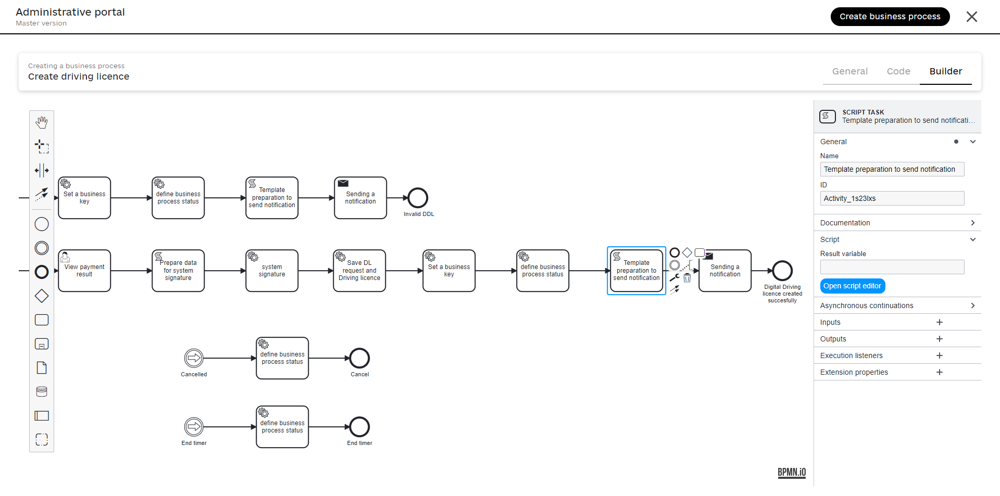For more detail on this delegate configuration see bp-modeling/bp/element-templates/service-task-templates/system-signature-by-dso-service.adoc. -
Use the Create nested entities in data factory extension template to save a nested object to the database.
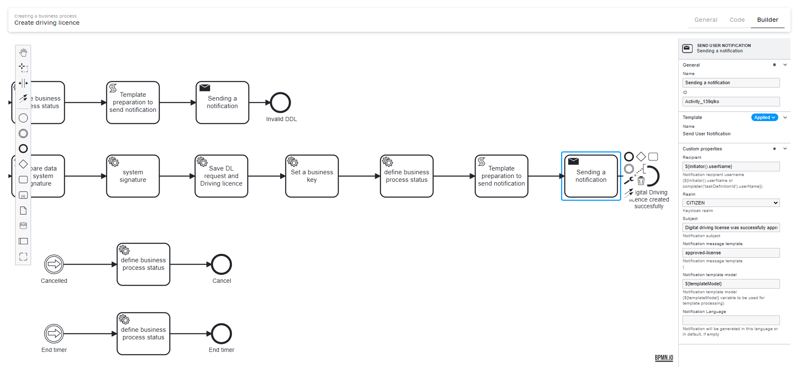For more detail on this delegate configuration see Create nested entities in data factory. -
Set a business key. Use the Define process business key extension template.
For more detail on this delegate configuration see Configuring business keys in business processes. -
Define a business process status. Use the Define business process status extension template.
For more detail on this delegate configuration see Define business process status. -
Script task: initialize and store a notification template model.
This script is designed to manage a JSON-based template model within a process execution context. It ensures the template is freshly set up for temporary use without carrying over any previous session data. Below is the explanation of each operation performed by the script:
-
Initialize a JSON object.
-
def templateModel = S([:], 'application/json') -
Initializes an empty JSON object and assigns it to the
templateModelvariable. This function creates a new JSON structure designated specifically for JSON data manipulation.
-
-
Remove existing variable.
-
execution.removeVariable('templateModel') -
Remove any pre-existing
templateModelvariable from the current execution context. This step is crucial to prevent old or unwanted data from affecting the current process logic.
-
-
Set transient variable.
-
set_transient_variable('templateModel', S(templateModel, 'application/json')) -
Sets a transient variable named
templateModelwith the newly initialized JSON object. The JSON object is re-validated through theS()function to confirm its format as JSON. Transient variables are used for data that does not require persistence beyond the immediate process context, ensuring it is available temporarily as needed.
-
By ensuring that the
templateModelis always current and correct, this script significantly enhances the reliability of subsequent process tasks or decision logic. -
-
Notify the user of a result. Use the Send user notification extension template to send the appropriate message to the inbox.
For more details, see the Configuring in-app notifications page.